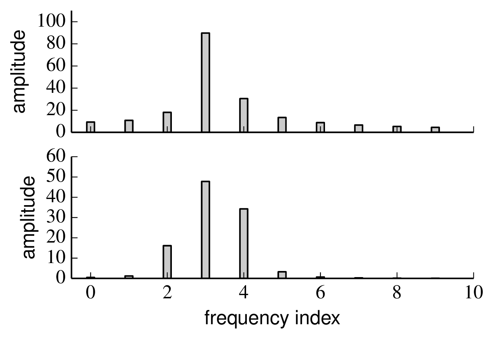
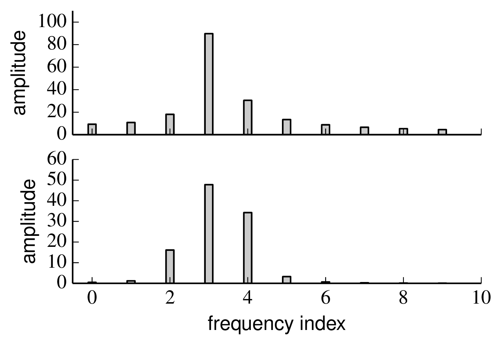
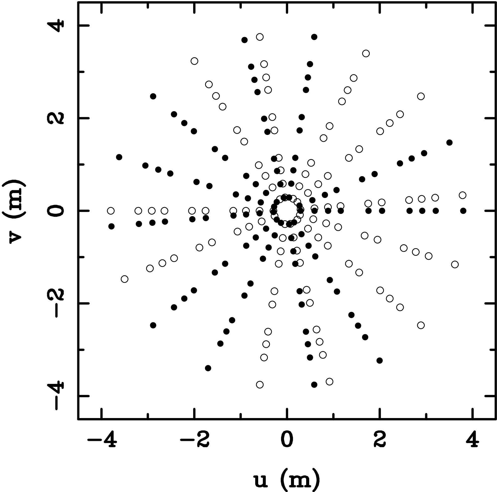

Chapter 2
Basic imaging
Figure 2.1:
Vector sum representation of the coherent flux F(
→u) of a binary system composed of two point sources of flux F
a and F
b. SVG file:
argand.svgFigure 2.2:
Visibility modulus (left) and phase (right) of a binary star with vector separation
→σ
0 as a function of the normalised projected baseline
→σ
0·
→u. The flux of the secondary star is 30% of that of the primary star. Python file:
binaryvis.pyFigure 2.3:
Visibility of a point source a uniform disc such as a star. For a star at the phase centre the visibility is purely real. Python file:
discvis.pyFigure 2.4:
Visibility function for a Gaussian disc. Python file:
gaussian.pyFigure 2.5: Telescopes arranged in different 1-dimensional configurations (left) and the corresponding baseline sampling, labeled with the telescope pairs that sample that baseline (right). The lower configuration is termed "redundant" because at least one baseline is repeated, and as a result fewer distinct (u,v)points are sampled. SVG file:
redundant.svgFigure 2.6: A telescope layout for the Magdalena Ridge Observatory Interferometer (left) and the resulting baseline coverage (right). Python file:
mroi-uv.py
Figure 2.7: The baseline vector
→B rotating about the Earth's axis (left) and the corresponding (u,v)coverage for an 8-hour track for the observation of an example source (right). The (u,v)coverage is shown with one observation per hour of track. Each observation gives two (u,v)samples due to the Hermitian symmetry of the Fourier transform. SVG file:
baseline-rotation.svg Python file:
earth-rotation-partial.pyFigure 2.8: Earth-rotation synthesis tracks for the CHARA telescope array observations of two different stars, from . The star α Cephei is relatively close to the celestial pole (declination ≈ 63\nobreak°\xspace) and so the (u,v)tracks on the are more circular while α Ophiuchi is nearer to the celestial equator (declination ≈ 13\nobreak°\xspace) and so the (u,v)tracks are more elongated.
Figure 2.9: Wavelength synthesis (u,v)coverage of VLTI observations of the star HD87643 in the astronomical H (left) and K (right) bands (from ). The radial lines are due to the different spatial frequencies observed on the same baseline at different wavelengths within these bands.
Figure 2.10:
The "lattice" of reconstructed images caused by finite sampling. SVG file:
lattice.svg
Chapter 3
Atmospheric seeing and its amelioration
Figure 3.1:
Schematic diagram of an initially-plane wavefront propagating through the atmosphere. SVG file:
corrugated-waves.svgFigure 3.2:
Atmospheric wavefront perturbations generated using a numerical simulation. The left hand image is a greyscale image of the surface plotted on the right. Python file:
phasescreen.pyFigure 3.3:
Simulated images of a point source of light (a) seen through a diffraction-limited telescope of diameter d (b) seen in a short exposure through the same telescope affected by atmospheric seeing with a Fried parameter given by r
0=0.1d and (c) seen in a long exposure through the same telescope and seeing. Python file:
speckle.pyFigure 3.4:
The motion of fringes seen on an 80-metre baseline on the SUSI interferometer. From .
SVG file:
davistemporal.svgFigure 3.5:
The closure phase measured on a binary star system as a function of the separation ∆θ of the pair of stars. The flux ratio of the pair is 10:1. In this one-dimensional example, the baselines form a "linear triangle" with lengths u
0, 2u
0 and 3u
0 and the angular separation of the pair of stars is assumed to be parallel to the direction of the baselines. The individual phases ϕ
12, ϕ
23 and ϕ
31 are shown, together with the closure phase ϕ
123=ϕ
12+ϕ
23+ϕ
31. Python file:
clpbinary.pyFigure 3.6:
Histogram of a sample set of phases (left) and "vector averaging" of this set of phases (right). The arithmetic average of the phases is 3
° , while the vector average phase is 159
° . Python file:
vectoraverage.pyFigure 3.7:
A simple random-walk model for the fringe visibility. Python file:
randomwalk.pyFigure 3.8:
The mean squared visibility loss 〈 |γ|
2 〉 as a function of exposure time τ. Also shown are approximate expressions for large and small τ. Python file:
vistime.pyFigure 3.9:
A simulated pupil-plane fringe pattern in the presence of atmospheric phase perturbations. Python file:
fringedistortions.pyFigure 3.10:
The mean squared fringe visibility loss 〈 | γ|
2 〉 as a function of aperture diameter D for a pair of well-separated circular apertures in Kolmogorov turbulence. Also shown are approximate forms for 〈 | γ|
2〉 when D << r
0 and D >> r
0 Python file:
uncorrected.pyFigure 3.11:
Schematic diagram of an adaptive optics system on a telescope SVG file:
AO.svgFigure 3.12:
Surface plots of the lowest order Zernike polynomials. Python file:
zernikesurface.pyFigure 3.13:
The variance of the coefficients of the Zernike modes in the wavefront perturbations produced by Kolmogorov turbulence. The variances for all modes with the same radial order are the same []; what is plotted is the total wavefront variance contributed by all n+1 modes corresponding to a given radial order n. The variance is plotted for an aperture diameter of D/r
0=1 and scales as ( D/r
0 )
5/3. Python file:
nollvariance.pyFigure 3.14:
The mean squared visibility loss 〈 |γ|
2 〉 as a function of aperture diameter D for an interferometer with an AO system at each telescope. AO systems which remove increasing numbers of low-order wavefront modes are shown and are labelled by the maximum Zernike radial order n corrected. An interfermeter with no correction (n=0) is also shown for comparison. Python file:
aovisibility.pyFigure 3.15:
Layout of a spatial filtering arrangement using a pinhole. SVG file:
pinhole.svgFigure 3.16:
Layout of a spatial filtering arrangement using a single-mode optical fibre. SVG file:
monomode.svgFigure 3.17: Fraction of starlight coupling into a single-mode fibre spatial filter as a function of the size of telescope for different levels of adaptive correction. The maximum Zernike radial order n removed by the adaptive optics system is indicated for each graph. The fibre mode is assumed to have a far-field pattern which is Gaussian in shape and has a 1/e radius which is 0.9 times the radius of the beam from the telescope: this choice gives approximately optimal coupling. Python file:
aofiber.pyFigure 3.18: Example layout for an interferometer with a separate fringe-tracking beam combiner and science beam combiner. SVG file:
fringe-tracker-science.svg
Chapter 4
Interferometers in practice
Figure 4.1: The optical beam train for one arm of the Magdalena Ridge Observatory Interferometer (MROI). SVG file:
beampath.svgFigure 4.2: Schematic layout of a siderostat light collector SVG file:
siderostat.svgFigure 4.3: Schematic layout of an alt-alt telescope. The tertiary mirror rotates at half the angular rate of the primary-secondary pair in order to keep the output beam fixed. SVG file:
alt-alt-telescope.svgFigure 4.4: Collecting elements: the siderostats on SUSI (left, from ) and the alt-az auxilliary telescopes of the VLTI (right, courtesy ESO).
Figure 4.5: Diffraction of a beam propagating through the beam relay system. SVG file:
rayleigh-distance.svg 
Figure 4.6: Array layout for the VLTI. The layout includes both the 8-metre-diameter Unit Telescopes (shown as large circles) and the 30 pads for the 1.8-metre-diameter Auxiliary Telescopes (shown as smaller circles). The baselines which were used for calibrator observations by are overlaid on the diagram. SVG file:
vlti-layout-vinci.svg
Figure 4.7: Array layout for the inner portion of the NPOI. The siderostat stations active in the late 2014 observing season are shown as filled squares. The fixed "astrometric" stations have labels beginning with "A", while the "imaging" stations, which can take movable siderostats, have labels beginning with "N", "E" or "W" depending which arm of the array they are on. The outer imaging stations of the array are not shown: these extend to baselines of up to 450 m (image courtesy Don Hutter).
Figure 4.8: Geometry for calculating the change of delay with time due to Earth rotation. SVG file:
rotating-vector.svgFigure 4.9:
Schematic diagram of a delay line showing the path of the starlight through the "cat's eye" retroreflector. The path of the laser metrology beam has the same geometry as for the starlight beam, but in a plane perpendicular to the page. SVG file:
delay-line.svg
[c]0.6
 [c]0.6
[c]0.6
Figure 4.12: Schematic outline of two types of multi-telescope beam combiners, a pairwise combiner (upper) and an all-in-one combiner (lower). SVG file:
pairwise.svg SVG file:
all-in-one.svg [b]0.75
[b]0.75
Figure 4.13: Multiplexing 3 beams into a single fringe pattern in the image plane (upper) and the modulus of the Fourier transform of the fringe pattern showing peaks at three different frequencies (lower). SVG file:
image-plane-multiplexing.svg
Figure 4.14: Schematic for the 4-way temporally-multiplexed beam combiner in the COAST interferometer []. BS indicates beamsplitters where the beams are combined. The output is on four detectors da-dd which all receive the superposition of all four input beams. OPD modulation takes place external to the beam combiner.
Figure 4.15: The scanning pattern for the temporally-multiplexed combiner in Figure
4.14.
The scanning velocities are at -3, -1, +2, and +3 times a base velocity. This ``non-redundant" arrangement of velocity
differences means that the interference fringes between the 6 pairs of input beams all appear at different fringe frequencies.
Figure 4.18: Spectrally-dispersed fringes from the AMBER beam combiner. The spectral dispersion is in the vertical direction: each horizontal line on the right-hand side is a spatially coded fringe at a given wavelength. The left-hand pair of channels are photometric calibration channels and so have no fringes. From .
Figure 4.19: The layout of the integrated optics chip used in the PIONIER beam combiner. From .
Figure 4.20: The optical setup for an aperture masking experiment on a large single telescope. SVG file:
aperture-masking.svg [b]0.49
[b]0.49
Figure 4.21: The mask layout for a Keck aperture masking experiment (left) and the resulting (u,v)coverage (right). From .
Chapter 5
Measurement noise
Figure 5.1:
The SNR of atmospheric-noise-limited measurements of fringe amplitude as a function of exposure time. The SNR is defined as the mean squared visibility modulus divided by the standard deviation of the squared modulus. From .
Figure 5.2:
signal-to-noise ratio for atmospheric-noise-limited observations through apertures of different diameters (from ). The solid line corresponds to a tip-tilt corrected aperture and the dashed line to an uncorrected aperture.
Figure 5.3:
Sample bispectrum values plotted on an Argand diagram. The values were measured using aperture masking on a bright point source (α Boo) with sub-r
0 subapertures. The scatter is larger in the direction parallel to the mean bispectrum value than in the perpendicular direction, suggesting that the exposure time used was much greater than t
0. From
Figure 5.4:
The phase error σ
ϕ on the bispectrum as a function of exposure time for atmospheric-noise-limited measurements. From .
Figure 5.5:
The phase error σ
ϕ on the bispectrum as a function of aperture diameter for atmospheric-noise-limited measurements. The dashed line is for no adaptive optics correction and the solid line is for tip-tilt correction. From .
Figure 5.6:
The signal-processing chain for a single pixel of a photoelectric detector. Light enters as photons on the left and exits as a digitised electrical signal on the right. ADC stands for analogue-to-digital converter. SVG file:
pixel-signal-chain.svgFigure 5.7: The photon degeneracy parameter (photons per unit frequency per unit time in a single spatial mode) for thermal radiation at frequency ν from a black body at temperature T. Python file:
degeneracyparameter.pyFigure 5.8:
Argand diagram representation of the estimator
∧F
ij for the fringe coherent flux as a sum of the true coherent flux F
ij and the complex noise n
ij. It can be seen that the complex noise gives rise to both amplitude and phase errors in the estimate. SVG file:
noise-vector.svgFigure 5.9: The signal-to-noise ratio of the power spectrum as a function of the signal-to-noise ratio of the coherent flux. The atmospheric-noise-dominated signal-to-noise ratio has been assumed to be of order 100. Python file:
powerspectrum-scaling.py
Chapter 6
Interferometric observation of faint objects
Figure 6.1: Signal-to-noise ratio (SNR) of the power spectrum as a function of integration time \texp for photon-noise-limited measurements (left) and read-noise-limited measurements (right) in the low-light-level regime. The SNR is normalised such that a system with a perfect fringe tracker which freezes the fringe motion would give an SNR of unity for an exposure time of t
0. Python file:
snrtau.py
 |
Figure 6.2: The signal-to-noise ratio (SNR) of photon-noise-limited fringe power spectrum measurements as a function of the interferometer aperture diameter D. The SNR is calculated for an interferometer using no spatial filter (left) or a single-mode spatial filter (right). Different lines show the effects of different radial orders of adaptive correction: the lowest line corresponds to correction of Zernike wavefront modes up to radial order 1 (tip-tilt correction) and the uppermost line to correction up to radial order 5. The SNR plotted is normalised to unity for a perfectly-corrected aperture of diameter r
0, under the assumption that the source is sufficiently faint that the true SNR per exposure is much less than unity (the faint-source regime). Python file:
SNR-vs-diameter.py
 |
Figure 6.3: The signal-to-noise ratio (SNR) of read-noise-limited or background-noise-limited fringe power spectrum measurements as a function of the interferometer aperture diameter D. All other details are as in Figure
6.2. Python file:
SNR-vs-diameter-readnoise.pyFigure 6.4: Schematic of a Shack-Hartmann wavefront sensor consisting of an array of lenslets (left) and the spot pattern seen on the detector (right). The upper row is for an unaberrated wavefront, which yields a regular spot pattern corresponding to the centres of the lenslets, while the lower row illustrates that the spots are displaced when the lenslets are illuminated with an aberrated beam. Diagram adapted from "Adaptive optics tutorial at CTIO" by A. Tokovinin,
http://www.ctio.noao.edu/~atokovin/tutorial/. SVG file:
shack-hartmann.svgFigure 6.5: Illustration of the effects of angular anisoplanatism. SVG file:
anisoplanatism.svgFigure 6.7: A sample fringe track showing a "phase jump" which occurs when the fringe phase is changing rapidly compared to the sample time of the fringe sensor. Python file:
phase-jump.pyFigure 6.8: Fringe envelope scans from the COAST interferometer. The change in OPD is approximately 60 microns during each 100 ms scan. The top trace shows the intensity as a function of time for two scans across the fringe envelope, and the bottom trace is the inferred envelope, which can be used to find the zero-OPD offset. From .
[c]0.267
 [c]0.267
[c]0.46
[c]0.267
[c]0.267
[c]0.46
[c]0.267
 [c]0.267
[c]0.46
[c]0.267
[c]0.46
Figure 6.9: Spectrally dispersed fringe patterns (left), the fringe patterns remapped so that the fringe crests are parallel (middle) and the power spectra of the remapped fringes (right). The upper row corresponds to zero OPD while the lower row corresponds to a finite OPD, which causes the fringe phase to change linearly as a function of wavelength. Python file:
groupdelay-raw-untilted.py Python file:
groupdelay-raw-tilted.pyFigure 6.10: Simulated group delay signal at high light levels (left) and at a light level corresponding to the lowest signal-to-noise ratio at which the fringe envelope can be reliably tracked (right). Each column of pixels corresponds to the time-averaged group delay fringe power for different trial delays at a given instant in time. Python file:
group-delay-track-high-light.py Python file:
group-delay-track-low-light.pyFigure 6.11: Schematic design of the dual-star system in the Palomar Testbed Interferometer. Two parallel beam combiners measure fringes simultaneously on a primary and secondary star. From .
Figure 6.12: The object visibility modulus as a function of baseline a when observing a uniform disc. Python file:
jinc-log.py
Chapter 7
Observation planning
Figure 7.1: Baseline coverage tracks for observations of Mira (o Ceti) using the VLTI A0-B1-C2-D1 quadruplet of telescopes. The tracks shown are the coverage if Mira is observed at all elevations above 30
° . Python file:
miraUv.py
Chapter 8
Data reduction
Figure 8.1: Schematic outline of the forward problem in scientific inference. SVG file:
degeneracy.svgFigure 8.2: The forward model of an interferometric measurement (left) and an outline of the data reduction process for interferometric data (right). SVG file:
interferometric-forward-and-reverse.svg
Figure 8.3: A discretely-sampled fringe pattern with an envelope. The individual fringe patterns are shown on the left and the superposed pattern on the right. Python file:
component-fringes.py Python file:
superposed-fringes.pyFigure 8.4: Discretising a continuous function represented as converting it to a series of Dirac delta functions. Python file:
discretising.pyFigure 8.5: The magnitude of the DFT of the fringe pattern shown in Figure
8.3. The component at zero frequency has been truncated. Python file:
dft-amplitude.pyFigure 8.6: A sinusoid with an integral number of fringe cyles over the sampling interval (upper left) and with a non-integral number of fringe cycles (lower left) and their corresponding discrete Fourier transforms (right). The DC value of the fringe pattern has been set to zero to provide greater clarity. Python file:
leakage-sine.py Python file:
leakage-fourier.py [b]0.49

[b]0.49

Figure 8.9: Squared visibility measurements from the Palomar Testbed Interferometer as a function of time of night. Measurements from both the target star (51 Peg) and the calibrator star (HD 215510) are shown. The authors of the paper conclude that there is little evidence for the target star being resolved, and so the majority of the visibility variation seen in both the target and the calibrator is due to variations in the system visibility. From SVG file:
pti-visibilities-vector.svg
Chapter 9
Model-fitting and image reconstruction
Figure 9.2: The (u,v)plane coverage of observations of VY CMa with the VLTI and the PIONIER instrument. From .
| i1(x,y) |  |  | i2(x,y)
|
| i12(x,y) |  |  | i21(x,y)
|
Figure 9.3: Upper row: Images of two founders of
interferometry - H. Fizeau (left) and A. A. Michelson (right).
Lower row: hybrid images made from combining the
Fourier amplitudes of Fizeau and the Fourier
phases of Michelson (left) and from combining the
Fourier phases of Fizeau and the Fourier
amplitudes of Michelson (right).
Figure 9.4: Images at several epochs of the evolved star IRC+10216, showing the complex structure of the dust shells around the star. From .
Figure 9.5: Image reconstructions of the dust around the supergiant VY CMa from the 2014 image "beauty contest" [].
|  | 
|
Figure 9.6: (Left) The Fourier plane coverage of the Betelgeuse
710nm wavelength observations.
(Right) The average power spectrum of 500 interferograms
taken on Betelgeuse at 546nm wavelength.
This data was taken using a 6-hole mask, but
fringes are only visible on the shortest 7 out of 15 baselines because the source
is resolved on longer baselines.
Figure 9.7: A subset of the calibrated visibility (left) and closure phase (center)
measurements on Betelgeuse at a wavelength of 710 nm. The visibility data is plotted
for two similar position angles of the
mask. The closure phase data is plotted for two sets of
triples containing only short baselines and two sets of triples
containing long baselines. The closure phases are labelled with the
indices (1-10) of the baselines making up the triple. From .
Figure 9.8: Contour map of the reconstructed image of Betelgeuse at 710 nm. The contours are at 1,2,10,20,30,...,90% of the peak intensity.
Figure 9.9: Image of a red supergiant star simulated using 3-dimensional radiative hydrodynamic modelling. From .
Chapter 10
Fourier transforms
Chapter 11
Supplementary online material
File translated from
TEX
by
TTH,
version 4.05.
On 10 Jul 2015, 13:07.


{kind=link}
{kind=link}
{kind=link}
{kind=link}
{kind=link}
{kind=link}
{kind=link}
{kind=link}
{kind=link}
{kind=link}
{kind=link}
{kind=link}
{kind=link}
{kind=link}
{kind=link}
{kind=link}
{kind=link}
{kind=link}
{kind=link}
{kind=link}
{kind=link}
{kind=link}
{kind=link}
{kind=link}
{kind=link}
{kind=link}
{kind=link}
{kind=link}
{kind=link}
{kind=link}
{kind=link}
{kind=link}
{kind=link}
{kind=link}
{kind=link}
{kind=link}
{kind=link}
{kind=link}
{kind=link}